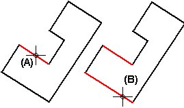
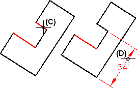

Place a dimension using a dimension axis
The Dimension Axis command sets the orientation of the dimension text and lines on the drawing sheet or dimension plane. You can use the new dimension axis, rather than the default axis, while you are using any of the dimension commands listed below. After you define the dimension axis, you can place dimensions that run parallel to or perpendicular to the dimension axis.
-
Choose one of the following commands:
-
Smart Dimension

-
Distance Between

-
Angle Between

-
Symmetric Diameter

-
Coordinate Dimension

-
-
On the command bar, select the Use Dimension Axis option from the Orientation list.
-
(For assembly models) On the command bar, click Activate Parts to make the parts in the model eligible for selection.
-
On the command bar, click the Dimension Axis button
 .
. -
Click an element that you want the dimension axis to be parallel or perpendicular to (A).
You can select a line on the model, a line on the drawing geometry, or a centerline annotation.
-
Click an element that you want to be the dimension origin (B).

-
Click an element that you want to measure (C), and then click to place the dimension (D).

-
Once defined, a dimension axis is displayed with a dashed line. If you select a dimension that was placed using a dimension axis, the dimension axis is highlighted.
-
You can redefine an existing dimension axis by clicking the Dimension Axis button again and choosing a different line. Dimensions that were placed using the original dimension axis readjust to the axis you select.
-
You also can use the Dimension Axis command on the PMI tab to set the dimension axis when a command is not running.